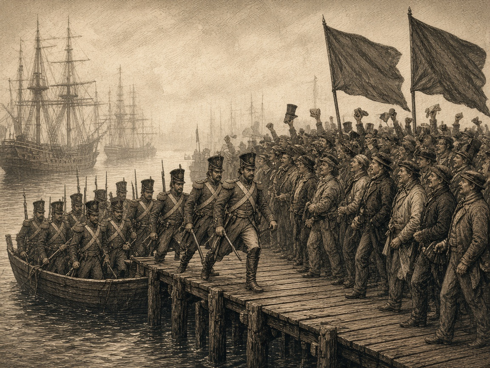
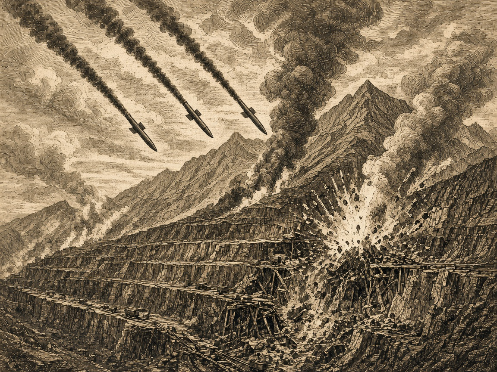

飢えと暴政に苦しむ市民、なのです軍を解放者として迎える
金野港（63,15）を占領 食料ゼロ・暴動十四か所 失政を重ねた伯領に歓呼の声

【総合部】第200期、金野伯爵領の港（63,15）はなのです主義人民共和国の占領下になった。食料備蓄が尽きても徴税と徴発を続け、配給も立て直せなかった伯爵家への怒りは、相次ぐ暴動となって十四か所へ広がっていた。上陸するなのです軍を市民は歓呼で迎え、「解放者が来た」と叫ぶ者もいた。人口は六万八千五百人。市民が占領軍に託す期待と、港を失った伯領の行方を2面で追う。

泰平のミサイル、鉱山と採石場を壊滅
泰平天国は狐っ娘の尻尾教団（42,49）へ弾道ミサイルを連射し、鉱山（41,49）、採石場（41,50）（41,48）、兵站基地（42,49）に命中して一帯を壊滅させた。山肌が吹き飛び、粉塵が谷を覆った。教団と泰平の今期損害は一万百人対四千五百人。なのです主義人民共和国の探検隊はロンギード大陸中央の未開拓地を踏査し、中立の森（72,67）を占領した。銀嶺侯国は首都を（75,30）へ移し、スルガとオリョルッル王国が開戦した。火災は十三件・四万八千人。国特集は8面の青海共和国。